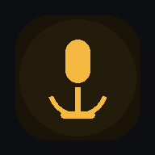

Tap to speak
Banners work while the app is open. If you close it, use Add to calendar so your phone still reminds you.

Speak or type a reminder
Tap to speak
Use your iPhone’s keyboard mic
This uses Apple’s own dictation, so it works even when the yellow mic button doesn’t — including in the Home Screen app.
Banners work while the app is open. If you close it, use Add to calendar so your phone still reminds you.
Tap the yellow microphone and say something like “dentist Tuesday at 2, remind me an hour before.” Or type that same kind of sentence and tap Add reminder.
You’ll get a card so you can check the title, day, time, whether it repeats, and how early to remind you, then Save or Cancel.
If you don’t say a time, it uses 9:00 AM — a fresh default, not the time from your last reminder.
The yellow mic button works best in Safari (the compass icon). It often does not work if you opened this from the Home Screen, or in Chrome on iPhone. That’s an iPhone limit, not something you did wrong.
The reliable option on iPhone is Use iPhone keyboard mic. That uses Apple’s own dictation on the keyboard, and it works in Safari and in the Home Screen app.
To use it: tap Use iPhone keyboard mic, then tap the microphone key on the iPhone keyboard (usually next to the space bar). Speak, then tap the mic again or Done.
Turn on dictation first: Settings → General → Keyboard → Enable Dictation. If a prompt appears, tap Enable Dictation.
Allow the mic for the yellow button in Safari: when Safari asks, tap Allow. To change it later, open this page in Safari, tap the Page Menu (left of the address bar) → Website Settings → Microphone → Allow. On recent iPhone software you can also check Settings → Apps → Safari → Microphone. On older software, look under Settings → Safari.
If you see Speech Recognition under Settings → Privacy & Security, allow it for Safari too. Siri being on can also help the yellow mic start.
If the yellow mic still won’t listen in the Home Screen app, open this same page in Safari instead, or just use the keyboard mic.
Tap Enable notifications if you want a banner while this app is open. If you close the app or lock your phone, the reminder may not go off. That’s a limit of web apps on phones.
For a reminder you can count on, tap Add to calendar on an item (or Export all to calendar) and let your phone’s calendar app notify you.
iPhone: Open this page in Safari (not Chrome). Tap the Share button (the square with an arrow). Tap Add to Home Screen.
Android: Open this page in Chrome. Tap the menu (three dots). Tap Add to Home Screen or Install app.
Reminders stay on this phone or computer. Nothing is sent to an account. Use Export backup if you want a copy, and Import backup to load one back.
Times are in Indianapolis time (Eastern).